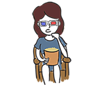
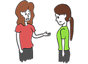

Module: Coping and body image/appearance
Vanessa L. Malcarne, PhD, Professor, Department of Psychology, San Diego State University, San Diego, CA with input from Mary Alore, MBA
Resources
10 ways to find joy
Use this print out to identify new ways to find joy in your life.
Printout PDFMany people seek professional help to deal with serious depression. This is strongly recommended. Although there are many ways to manage your depression (described below), severe depression should be mentioned to your health professionals. There are many treatment options available. The most effective is anti-depressant medication combined with cognitive-behavioral therapy. Talk to your health professional if you think you are depressed, and he or she can help you get professional help.
There are also a number of things you can do on your own to reduce depression.
Listen to Josephine’s testimonial (press the CC button for captions if needed)
1. Use your BRIGHT IDEAS! (discussed later in this module)
This problem-solving approach, described later in this module, was designed to help people who were depressed. Research has shown that it decreases depression (Chang et al., 2004; Nezu et al., 1998). So use the steps to help solve some problems that are negatively affecting you, and you should see your mood improve.
2. Do things you enjoy or that you used to enjoy.
Many people who are depressed feel tired and have little energy. They stop doing the things they enjoyed doing, like going to the movies, painting, playing with their children, or going fishing. Schedule time to do the things you’ve always enjoyed, and your mood may improve. See the resource on “10 Ways to find joy.”
3. Engage in mild to moderate exercise.
Research has shown that exercise improves mood. Many therapists actually prescribe exercise as one of the first ways to reduce depression. Pick an activity you enjoy. It does not have to be intense exercise. It is more important that you get active and get moving. Walking is a great way to exercise. It can be fun (see the previous strategy), and it helps with light exposure (see the next strategy).
4. Get a lot of light exposure.
Lack of exposure to light has been tied to depression. One easy way to get more natural light is to spend more time outdoors, perhaps while exercising. There are also indoor lights that can help increase light exposure.
5. Get a lot of high-quality sleep.
Getting enough sleep can be very hard when you are in pain and uncomfortable. Sleep is essential to your physical and mental health. There are many strategies that can be used to improve sleep, including (but not limited to):
Changing your sleeping room – make the bedroom quieter/darker/more comfortable
Changing your bedtime habits – go to bed earlier/later, wear different clothes, watch TV less, go to bed and get up at the same time every day
Exercising – exercise during the day; do not exercise right before bed
Relaxing – meditate, practice deep breathing and relaxation techniques, don’t work right before going to bed
Changing your diet – avoid caffeine after lunch, don’t drink alcohol in the evening, avoid large meals before bedtime, do drink warm milk
Everyone’s sleep problems are different and require different strategies. Talk to a sleep expert. Read self-help books available in the personal health sections of bookstores. Talk to a health professional about medications if nothing else works.
See ideas for sleep in the modules on Fatigue and Energy Conservation and Pain Management.
6. Let your family and friends help you.
Social support is very important to people experiencing depression. A lack of social support can contribute to depression. People who are very depressed can be difficult to spend time with. The depressed person can be in a vicious cycle in which they desperately need social support, but drive people away at the same time. Family and friends will need to be very patient. They may need to be assertive about including the depressed person in activities and social gatherings. They also need to offer emotional support and get the person help.